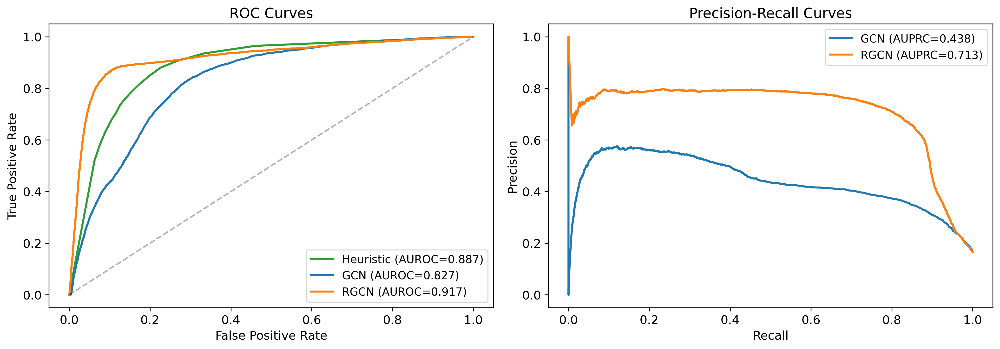
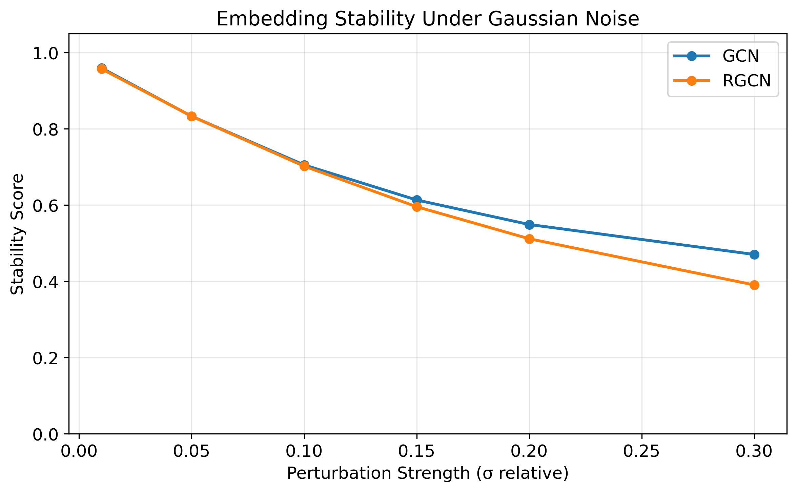
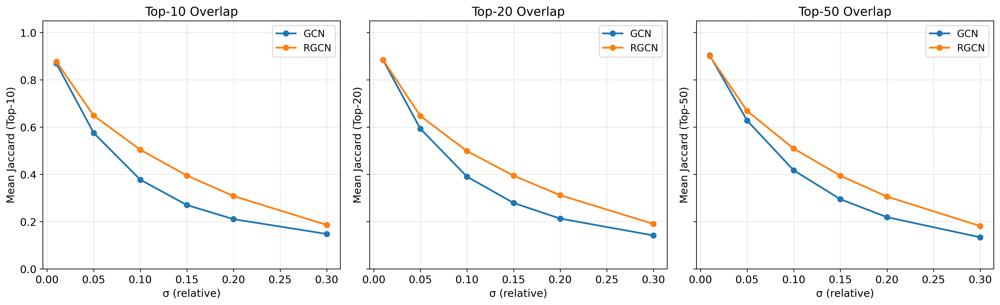
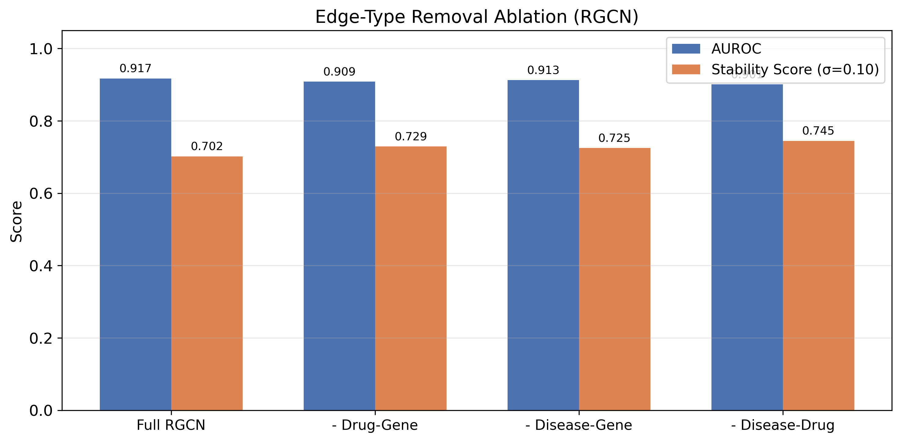
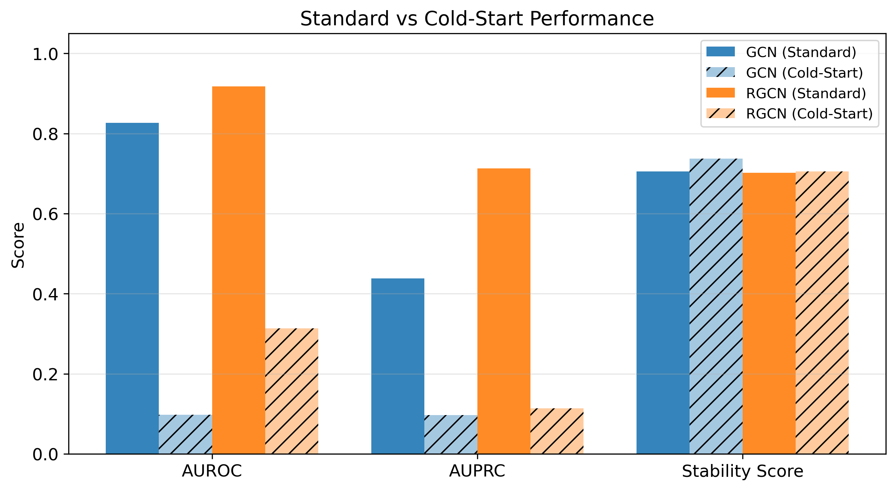

Auditing Stability in Drug Interaction GNNs
Drug-drug interactions (DDIs) pose a serious clinical risk: when one drug alters the pharmacological effect of another, the result can range from diminished efficacy to life-threatening adverse reactions. Graph neural networks (GNNs) have emerged as a promising tool for predicting these interactions by learning from the topology of biomedical knowledge graphs. But a model that achieves high AUROC tells us it can discriminate interacting from non-interacting pairs—it tells us nothing about whether those predictions are stable.
In this project, we ask a different question: are GNN-based drug interaction predictions robust to small perturbations in learned representations? If tiny changes in an embedding vector cause large shifts in predicted probabilities or completely reshuffle the ranked list of predicted interactions for a drug, clinicians should be cautious about trusting those predictions—regardless of test-set accuracy.
We investigate this hypothesis by building a heterogeneous biomedical knowledge graph from four Stanford SNAP datasets, training two GNN architectures of differing complexity, and systematically measuring how their predictions change under controlled Gaussian noise and dimensional dropout applied to learned embeddings.
Graph neural networks learn node representations by aggregating information from local neighborhoods. A standard GCN treats all edges identically, learning a single set of convolutional filters applied uniformly. In contrast, Relational GCN (RGCN) assigns separate weight matrices per relation type, enabling it to model heterogeneous interactions such as "drug targets gene" differently from "drug interacts with drug." Both architectures produce continuous embedding vectors for each node, and link prediction is performed by scoring the compatibility of embedding pairs through a dot-product decoder.
For drug interaction prediction, the appeal of GNNs is clear: they can exploit the rich topology of biomedical knowledge graphs, where drugs connect to genes, genes to diseases, and diseases back to drugs through indirect paths. However, previous work has focused almost exclusively on predictive accuracy (AUROC, Hits@K) without asking whether the learned representations are robust. Two embeddings that produce identical predictions on a test set may have very different sensitivity to noise—and in a clinical setting, this difference matters.
We construct a heterogeneous knowledge graph from four BioSNAP datasets maintained by Stanford's SNAP group:
| Dataset | Edges | Nodes | Relation |
|---|---|---|---|
| ChCh-Miner | 48,514 | 1,514 drugs | Drug–Drug interaction |
| ChG-Miner | 15,138 | 5,017 drugs + 2,324 genes | Drug targets Gene |
| DG-AssocMiner | 21,357 | 519 diseases + 7,294 genes | Disease–Gene association |
| DCh-Miner | 466,656 | 5,535 diseases + 1,662 drugs | Disease–Drug association |
After ID harmonization (filtering to the 1,514 drugs present in the DDI network and linking auxiliary edges to those drugs), the final heterogeneous graph contains three node types (Drug, Gene, Disease) and four relation types. The drug-gene targets link covers 79.6% of DDI drugs, and disease-drug associations cover 66.1%, providing substantial heterogeneous context for the RGCN to leverage.
DDI edges were split 80/10/10 into train/validation/test sets. All auxiliary edges (drug-gene, disease-gene, disease-drug) remain in the graph during all phases. For the cold-start evaluation, 151 drugs (10%) with mid-range degree were held out entirely from DDI training.
We frame this as a link prediction task on the drug-drug subgraph. Given the heterogeneous graph G = (V, E, R) with node types V = Vdrug ∪ Vgene ∪ Vdisease and four relation types, we learn an embedding zu ∈ R64 for each drug u. Since the SNAP datasets provide only graph topology without node features, each node starts with a learnable embedding vector initialized via Xavier uniform. The prediction function for a drug pair (u, v) is score(u,v) = σ(zuT zv), where σ is the sigmoid function. We optimize binary cross-entropy loss with 1:5 positive-to-negative sampling, and evaluate with AUROC (primary metric), AUPRC, Hits@K, and our proposed Stability Score.
Common-neighbor count between drug pairs in the training DDI graph. This requires no learning and serves as a credibility floor.
A 2-layer Graph Convolutional Network operating on only the drug-drug interaction graph. It uses learnable 64-dimensional embeddings, ReLU activations, 20% dropout, and a dot-product decoder. This model sees no gene or disease context—it can only learn from DDI topology.
A 2-layer Relational GCN operating on the full heterogeneous graph with 7 relation types (including reverse edges). It uses separate learnable embeddings per node type, basis decomposition (2 bases) for parameter efficiency, and the same dot-product decoder on drug embeddings. This model can leverage drug-gene targets, disease-gene associations, and disease-drug links to enrich drug representations.
After training each model to convergence, we freeze all weights, extract the learned drug embeddings, and apply perturbations post-hoc. The model and decoder are not retrained—this isolates how sensitive the embedding space is.
Each perturbation experiment is repeated 10 times with different random seeds to obtain stable estimates with confidence bands. Perturbation is applied to final-layer drug embeddings only (after all GNN message passing), so we measure how sensitive the decoder is to the learned representation space rather than conflating it with message-passing dynamics.

Figure 1. ROC and Precision-Recall curves for all models on the test set.
| Model | AUROC | AUPRC | Hits@20 | SS (σ=0.05) | SS (σ=0.10) | SS (σ=0.20) |
|---|---|---|---|---|---|---|
| Heuristic | 0.887 | 0.554 | – | – | – | – |
| GCN | 0.827 | 0.438 | 0.047 | 0.833 | 0.705 | 0.549 |
| RGCN | 0.917 | 0.713 | 0.147 | 0.833 | 0.702 | 0.512 |
Table 1. Summary of predictive accuracy and stability metrics.
The RGCN substantially outperforms the GCN (AUROC 0.917 vs 0.827), confirming that heterogeneous context from drug-gene and disease-drug links improves DDI prediction. Notably, the common-neighbor heuristic (0.887) beats the GCN, highlighting that raw structural features are strong for this dense graph, and that a structure-only GCN needs significant auxiliary context to surpass them.

Figure 2. Stability Score under increasing Gaussian noise. Both models degrade at similar rates, but their instability patterns differ.
The headline finding: both models show similar Stability Score degradation under Gaussian noise, dropping from ~0.96 at σ=0.01 to ~0.39–0.47 at σ=0.30. Despite the RGCN's substantially higher accuracy, its embeddings are not more stable than the GCN's—if anything, they are slightly less stable at higher perturbation levels. This supports our primary hypothesis: accuracy gains do not automatically translate to representational robustness.

Figure 3. Top-K Jaccard overlap degradation under Gaussian noise for K=10, 20, 50.
The top-K overlap plots reveal a practical concern: at σ=0.10 (moderate noise), the GCN's top-20 predicted partners change by ~61% (Jaccard ~0.39), while the RGCN changes by ~50% (Jaccard ~0.50). At higher K, the RGCN maintains slightly better overlap, suggesting its ranking is more robust in the long tail even if top-ranked predictions are equally fragile.

Figure 4. Edge-type removal ablation showing AUROC and Stability Score for each RGCN variant.
The edge-type ablation reveals an interesting trade-off. Removing disease-drug edges causes the largest accuracy drop (0.917 → 0.901), confirming these are the most valuable auxiliary edges. However, it also produces the highest stability score (0.745), suggesting that the disease-drug edges introduce information that improves predictions but makes the embedding space slightly more sensitive to perturbation. The full RGCN achieves the best accuracy but the lowest stability.

Figure 5. Standard vs cold-start performance for both models.
Cold-start results are stark. Both models collapse on drugs with no DDI training edges (GCN AUROC: 0.098, RGCN: 0.314). The RGCN recovers partially thanks to auxiliary drug-gene and disease-drug edges, but performance remains far below the standard setting. Despite this accuracy collapse, the stability scores in the cold-start setting (GCN: 0.737, RGCN: 0.706) are comparable to or better than standard stability—likely because cold-start embeddings are less sharply tuned and thus less sensitive to perturbation. This is a subtle finding: stability and accuracy can be inversely related.
Our results provide evidence for the primary hypothesis: GNN models achieving strong DDI prediction accuracy can harbor significant representational instability. The RGCN, despite its clear accuracy advantage, shows similar or slightly worse stability than the structure-only GCN. This finding has practical implications: deploying a GNN for DDI prediction in a clinical decision support system requires stability auditing beyond standard test-set evaluation.
The accuracy-stability trade-off observed in the edge-type ablation is particularly noteworthy. Adding disease-drug edges improves AUROC by 1.6 percentage points but decreases the Stability Score by 4.3 points. One interpretation is that the disease-drug edges create longer-range dependencies in the graph, allowing the model to make more informed predictions but also making the embedding space more complex and thus more sensitive to perturbation. Future work could explore regularization techniques specifically designed to constrain embedding sensitivity during training, such as Jacobian regularization or adversarial embedding perturbation during training.
Limitations: (1) Gene identifiers across datasets use different systems (UniProt vs Entrez), preventing direct gene-level bridging between drug-gene and disease-gene edges. The disease-drug link provides the primary bridge instead. (2) The cold-start evaluation uses a relatively small set of 151 drugs. (3) Stability is measured on post-hoc perturbations rather than adversarial or naturally occurring noise. (4) We evaluate only two GNN architectures; more complex models like HGT or attention-based methods may show different stability profiles.
We built a heterogeneous biomedical knowledge graph from four SNAP datasets and compared a structure-only GCN against a multi-relational RGCN for drug-drug interaction prediction. The RGCN achieves AUROC 0.917 vs the GCN's 0.827, confirming that heterogeneous context substantially improves prediction quality. However, our stability analysis reveals that both models exhibit comparable sensitivity to embedding perturbation—the RGCN's accuracy advantage does not confer representational robustness. Edge-type ablation further shows that the most accuracy-boosting edges (disease-drug) slightly decrease stability, revealing an accuracy-stability trade-off. These findings argue for stability auditing as a complement to standard accuracy evaluation in safety-critical GNN applications.